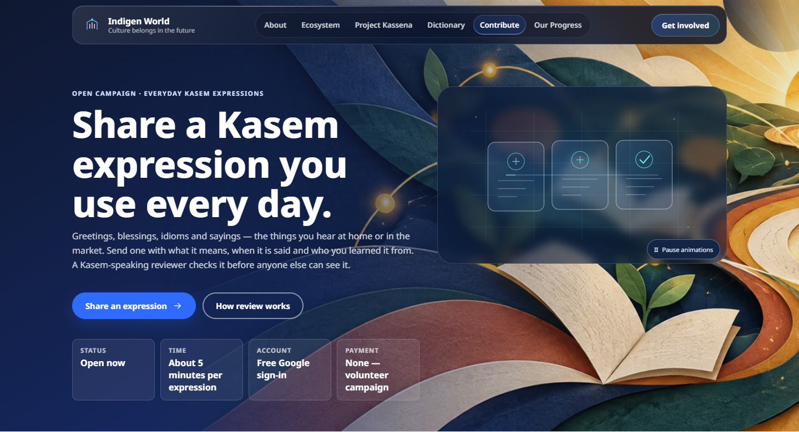
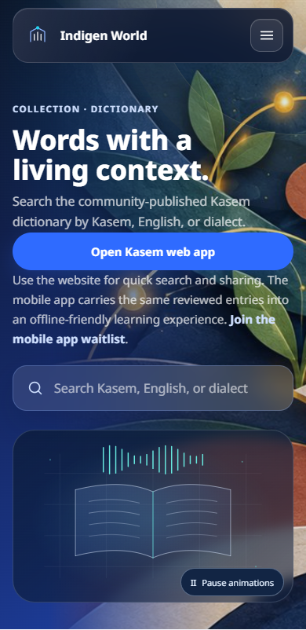
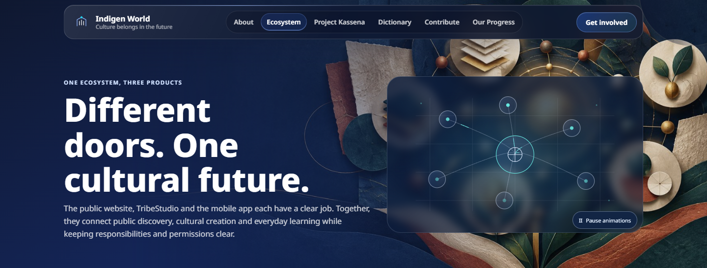

The illustrations in Indigen World's page headers have a clearer place in the layout. Text, buttons and search fields keep their own space, so an animation panel cannot cover the next step you came to find.
On wider screens, the illustration sits beside the page content. On smaller screens, the content comes first and the illustration follows below it. This helps readers exploring the ecosystem, Kasem speakers finding a word and contributors looking for the expression campaign.

Visit the Dictionary page to search published Kasem entries, or use Contribute to open the everyday-expression campaign. On a phone, the dictionary's search field stays above the illustration. About, Ecosystem, Get involved, Contact and the other shared page headers use the same separation. Recovery links on the page-not-found screen also stay clear.

Use Pause animations in the artwork panel whenever you prefer a still view. The website remembers that choice in your browser and respects your device's reduced-motion setting. The same space stays reserved when the illustration is still or its animation cannot load.

This is a website layout improvement. It does not change which dictionary records are published, who can review contributions or how payments are confirmed. The artwork remains decorative.